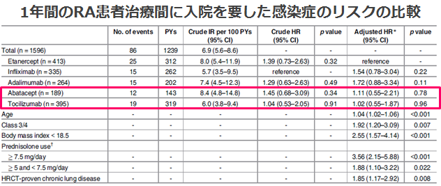
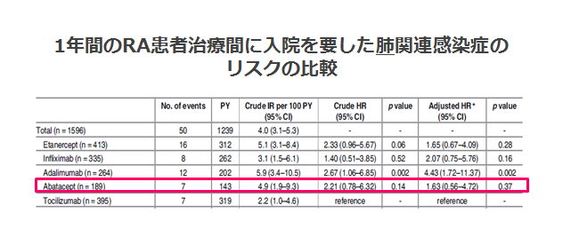

対オレンシア③安全性
入院を要する感染症及び重篤肺感染症リスクはACTとOREで同等（SARABA study・国内）
- ●日本における多施設共同後ろ向きコホート試験
- ●実臨床下での生物学的製剤間での入院を要した感染症のリスクを比較
- ●2009年～2014年の間に国内の施設でリウマチ科を標榜して生物学的製剤を使い始めたRA患者データ（1,596件;ETN(413),IFX(335),ADA(264),ABT(189),TCZ(395)を使用

入院を要した感染症リスクはTCZとABTで同等であった
入院を有する感染症のリスク因子は、年齢、class3/4,BMI,PSL7.5mg以上、
PSL５㎎~7.5mg,慢性肺疾患

重篤な肺感染症のリスク（HR）は、
TCZとABTで同等であった
実臨床下の高齢者を含むRA患者において、オレンシア使用でも有害事象は起きている
Shunsuke Mori, et al. PLoS One. 2017 Jun 8;12(6)